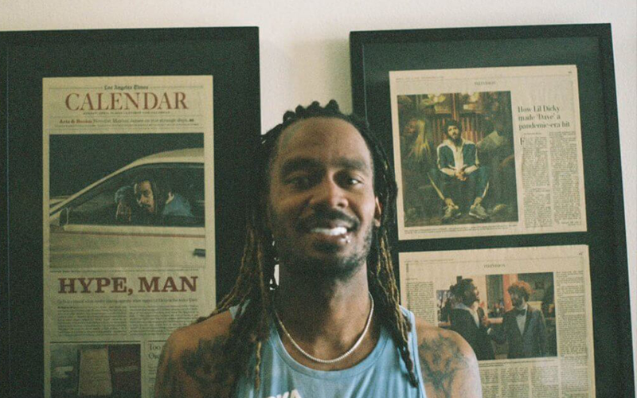

Humans of HOKA: GaTa
GaTa is an actor and rapper from South Central Los Angeles. He is also Lil Dicky's hype man. We interviewed him to learn more about how he made a career out of his passion, his inspiration and motivation to be open about his bipolar disorder, and why it's so important for him to give back.
-

HOKA: Can you tell us how you made a career out of your passion and what it takes to thrive as a rapper + hype man?
GaTa: I made a career by never giving up and always wanting to be in a better position. Setting my mind on goals that I knew I could accomplish by putting in the work. It takes a lot of patience to thrive in this industry.
HOKA: It's really inspiring how open you are about having bipolar disorder. How did you get to this point? What inspired you to share this?
GaTa: Lil Dicky inspired me to open up about my disorder. He wanted me to share my story so I could inspire others. I got to be so open about it thanks to my family and my manager because talking about your problems helps yourself and others feel good about opening up about their own circumstances.
HOKA: Who in your life has been there for you during your ups and downs?
GaTa: My mom and my sister have always been there for me. They adopted me when I was 18 months old. They still support me and everything that I do. It feels good to be able to take care of them and support them. Dicky and my manager have also been there me close to 10 years now.
To share a snapshot of my backstory, whenever I go home for the holidays, my grandparents proudly play a VCR footage of me painting on an easel as soon as I could walk. It was only two years ago however that I grew the courage to launch my business At the Summit Arts; I graduated from the University of Nevada, Reno with a Bachelor of Science in Nursing, hoping it would give my life direction. I still work as an RN on the side, but it's clear now that painting is my calling. I use my work to encourage our community to have more fun through outdoor exercise, being healthy and happy, as much as we can.
-
HOKA: What role does movement and getting outside play in supporting your mental health?
GaTa: Movement helps me release anxiety. Staying active outside is one of the best things I picked up on over the past few years. Taking walks and hiking help me think better. It's good for my health and my thought process.
HOKA: What are some tools you use to feel your best? Tell us about the tools that help you manage your mental health and help you take care of yourself.
GaTa: Writing is a tool that I use often to manage my mental health. I like to write down things so I can organize my thoughts. Seeing is believing and I like to see things I want to manifest. Writing songs help me a lot as well.
HOKA: What messages do you hope to share with people about mental health awareness and taking care of yourself?
GaTa: A message I would like to share is: No matter how big or small the issues you are having, please share it with someone. Talking is one of the best things you can do when you're going through something. It will take the weight off your shoulders and make you feel more at ease. It's not good to hold things in. You will reach a breaking point and eventually crack. And it will be tough to maintain a healthy mindset.
My favorite aspect of these art pieces is the communication of the many great ways there are to enjoy an area through running. They are unified in bright colors, strong texture, and an optimistic energy; once we put them up in Reno Running Company, they will be united under a hand-painted canvas that reads HOKA. One painting depicts a runner coming down Keystone Canyon, a local trailhead, with the city in the background. Another depicts a family on the summit of Mount Rose, our highest peak at 10,785', overlooking Lake Tahoe. The third depicts a section we run during the Reno-Tahoe Odyssey, a 178-mile relay race, along the Truckee River. The last depicts two friends embracing under the downtown Reno arch, where we have lots of road runs.
-
HOKA: What advice would you share with someone who is having a hard time finding motivation and believing in themselves?
GaTa: Always think about what you want to accomplish for yourself and for your family. Being a better person motivates me. It helps me take care of my immediate family. When you are down, think about your future.
HOKA: Tell us about the Los Angeles Boys & Girls Club and your experience with the nonprofit organization.
GaTa: The Los Angeles Boys & Girls Club is a place I used to go with a childhood friend to learn how to play basketball and take swimming lessons. Our folks wanted us to stay out of trouble. Going there was a safe haven for me.
HOKA: Why is it the charity that you selected to support for this Humans of HOKA partnership?
GaTa: It is important to give back to this organization because it helped me a lot as a kid. It kept me focused. Taught me about staying consistent. Also, the community needs this for the youth. The youth is the future and they need all the support they can get so they can have an impact on the community in a positive way.
HOKA: What advice would you give your 20-year-old self?
GaTa: Stay patient. Never give up. Don't worry about the success of others. Everyone is on a different journey.
We are so grateful to GaTa for opening up to us about his personal life and we're honored to share his experiences with our community. We hope this can help encourage others to open up and be a source of inspiration and motivation.
More of my work can be found on my website, www.AtTheSummitArts.com, and on my Instagram, @AtTheSummitArts. I will share the installation and events we do with the community for this project over the summer, and I hope you can follow along. Better yet, maybe it's your time to visit Reno this summer and join in on our classic races and festivities!